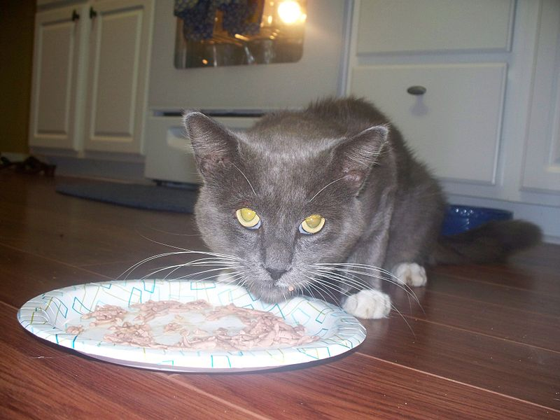

https://commons.wikimedia.org/wiki/File:Grey_cat_eating.jpg
Cats are carnivores, which means that they rely on nutrients found only in other animals. Because of the cat's evolution as a hunter, they consume a large amount of protein, a moderate amount of fat, and minimal carbohydrates; this still holds true.
Cats also require over a dozen other nutrients, such as vitamins, minerals, fatty acids, and amino acids. Although a cat needs a certain amount of specific nutrients to be healthy, more is not always better, especially for vitamins and minerals of which supplements are usually unnecessary and can be dangerous without a veterinarian's approval. However, above all, clean and fresh water is needed at all times.